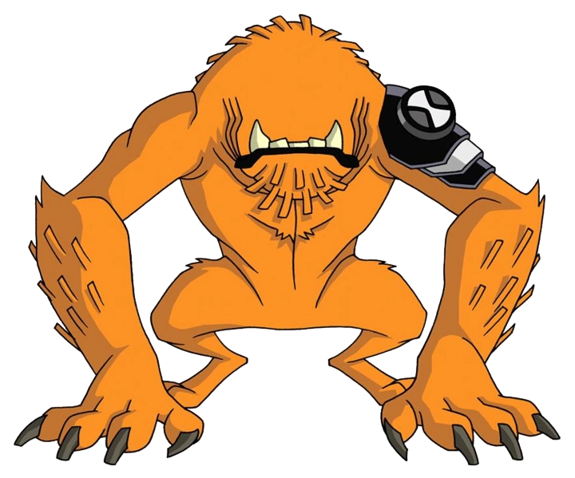

Besta é tido como um alien irracional, seguindo os estintos primitivos de caçar e matar. Parece um cachorro sem fucinho, olhos e orelhas, mas ainda bem amedrontrador, como uma besta.
Seu olfato é extremamente apurado, basicamente se orientando por ele e pela audição. Também sente o calor ao seu redor, então não se sinta seguro, ele já te encontrou.
Espécie: Vulpimancer
Planeta de Origem: Vulpin
Curiosidade:
Seus filhotes nascem com uma pelagem macia e branca, com o tempo a hostilidade do planeta os fazem criar pelos grossos e alaranjados.
